Um processo seletivo fictício, o Edital 900/2026 (Especialização em Docência, turma DEMO), configurado à mão pela interface e executado até a matrícula. São quatro Etapas, dois marcos de classificação, três listas de concorrência, 18 candidatos, dois recursos, uma reversão de vaga e oito convocações. Cada número deste guia foi lido do banco depois da execução.
O GPS não tem um campo "a Etapa B depende da A". A dependência nasce de três regras, e este trilho mostra cada uma no lugar onde age. Ele é também a sugestão de UX deste estudo (D4): uma estrutura assim, na Revisão, diria ao operador o que a ordem das Etapas significa.
"Seis vagas, uma para PcD e uma para PPI, cadastro de reserva de seis. Como digo isso ao sistema?"
O Gestor cria o Processo e o primeiro Edital; o Elaborador não tem esse botão, e a tela vazia dele não diz quem tem. Depois o Elaborador compõe o Edital num assistente de nove etapas.
Na etapa Perfis de Vaga nascem a oferta e as listas. As modalidades são livres: o GPS não conhece "PcD" nem "PPI" de fábrica. Criamos três (AC, PcD 5 %, PPI 20 %) e dissemos qual delas é a ampla. O quadro tem a linha geral (a ampla, 4) e uma linha por reservada (1 e 1). A sugestão pelo percentual aparece na própria linha: "5% de 6 = 0,3, sugestão 1".
A primeira gravação foi recusada: "O quadro de vagas soma 8 e o Perfil declara 6 — excesso de 2". A linha geral nasce preenchida com o total (6), e é preciso subtrair as reservadas à mão. A mensagem nomeou o número e o lugar, e a correção saiu de primeira.
Dois seletores importantes, "Qual delas é a ampla concorrência" e "Reverter vaga reservada não preenchida", só aparecem depois do primeiro salvamento. Escolhemos reverter "a quantidade que ficou sem preencher". O capítulo 12 mostra o efeito.
Por fim, o fato declarado "Data de nascimento": é o dado que o terceiro critério de desempate vai comparar. A ajuda diz "idade sai de data", e é a única pista, três etapas antes, de que o desempate depende daqui.
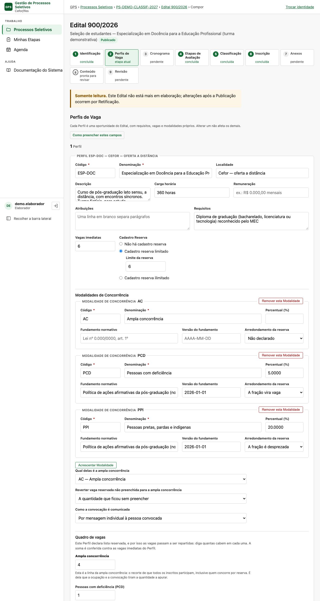
"Primeiro confiro o diploma, depois pontuo currículo e prova, e só os melhores vão à entrevista. Onde digo 'depois'?"
Cada Etapa tem uma forma de conclusão, com nota ou com decisão, sem nota (Deferido/Indeferido), e duas caixas independentes: eliminatória e classificatória. Nota mínima, nota máxima e peso também ficam na Etapa.
Não existe "a Prova depende dos Requisitos". O que existe é a ordem (as setas ↑↓ do cartão), e ela faz mais do que arrumar a tela: quem é eliminado numa Etapa sai de todas as seguintes, e a Etapa imediatamente anterior precisa ter habilitado a pessoa.
Por isso o Currículo veio antes da Prova. Um marco só classifica quem participa da última Etapa que ele lê. Com o Currículo depois da Prova, quem fosse eliminado na Prova nem apareceria na classificação, nem com o motivo.
Duas coisas que a tela não diz:
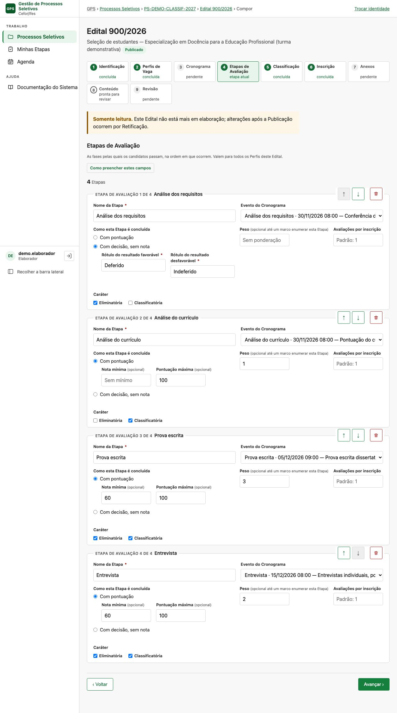
"Como as notas viram uma ordem, como desempato, e como digo que só oito vão à entrevista?"
Um marco é um ponto em que o Perfil produz uma ordem. Configuramos dois:
"Como as pontuações se combinam" só aparece depois de marcar a segunda Etapa. O arredondamento acontece uma vez, no fim: 556 / 6 = 92,666… vira 92,67.
O cartão do marco novo nasce como "Classificação final", com o código do Perfil, corte pelo quadro e "não governa Etapa". Para o marco intermediário foi preciso desfazer quatro padrões, e o segundo marco nasceu igual ao primeiro.
Os critérios de desempate do GPS são três tipos: maior nota numa Etapa, maior valor de um fato, menor valor de um fato. "Mais velho" é "menor data de nascimento". O empate que sobra a todos os critérios não se resolve: as pessoas dividem a posição (1, 1, 3).
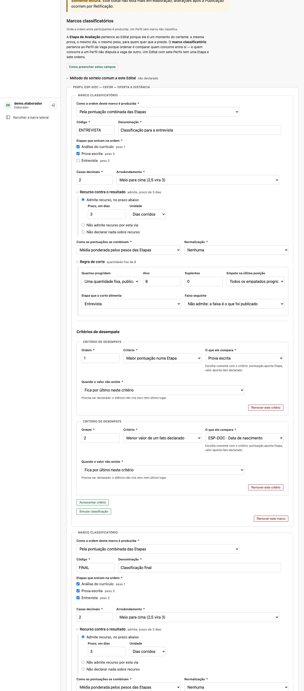
"Está tudo certo? O que o Edital vai dizer, e o que vai acontecer de verdade?"
A Revisão separa "O que falta para submeter" (só avisos, aqui) de "O que será congelado na submissão", e imprime a frase normativa de cada decisão. É a melhor conferência da configuração: quem lê entende o Edital.
Mas a frase do corte do marco 1 diz "Passam para a Etapa 'Entrevista' os 8 (oito) primeiros classificados", e o motor aplica 8 em cada lista. O marco 2, cujo alvo vem do quadro, diz "de cada lista de concorrência".
Quem mostrou o efeito real foi a prévia, ainda em 09/11: "Pessoas com deficiência (PCD): 9 autodeclarados; 8 avançariam" e "14 candidatos poderiam participar" da Entrevista. Na execução foram 12: 8 pela ampla + 2 PcD + 2 PPI.
Dos 12 salvamentos, um foi recusado, por erro de preenchimento. O ciclo "salvar, errar, corrigir" não apareceu. O risco que ficou é o contrário: uma escolha de consequência grande passou sem aviso, descrita de um jeito no documento e executada de outro.
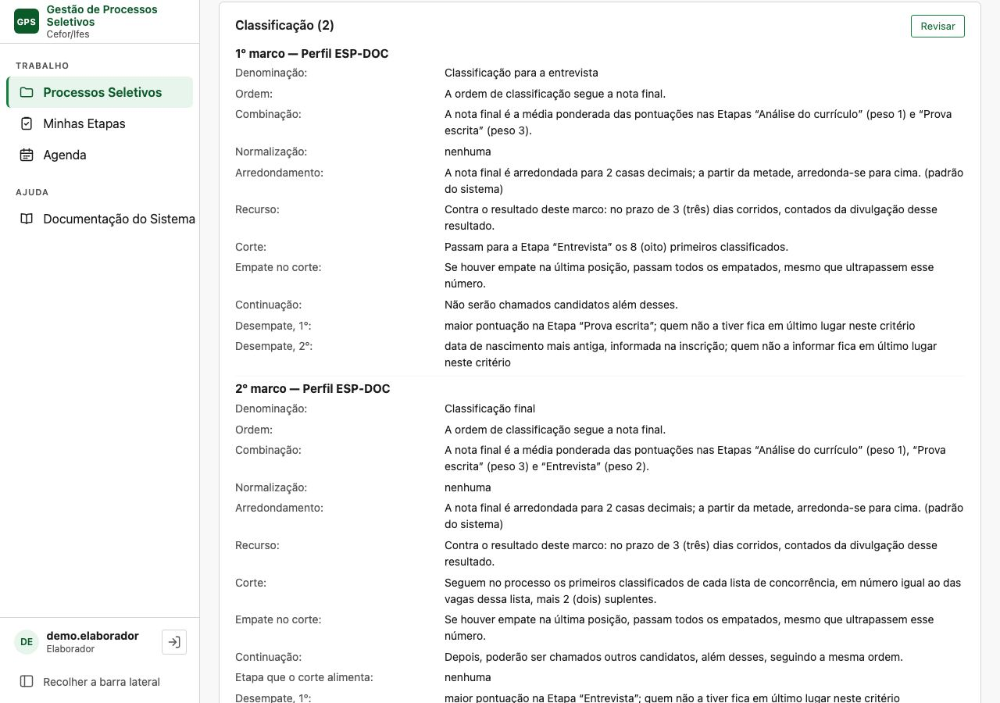
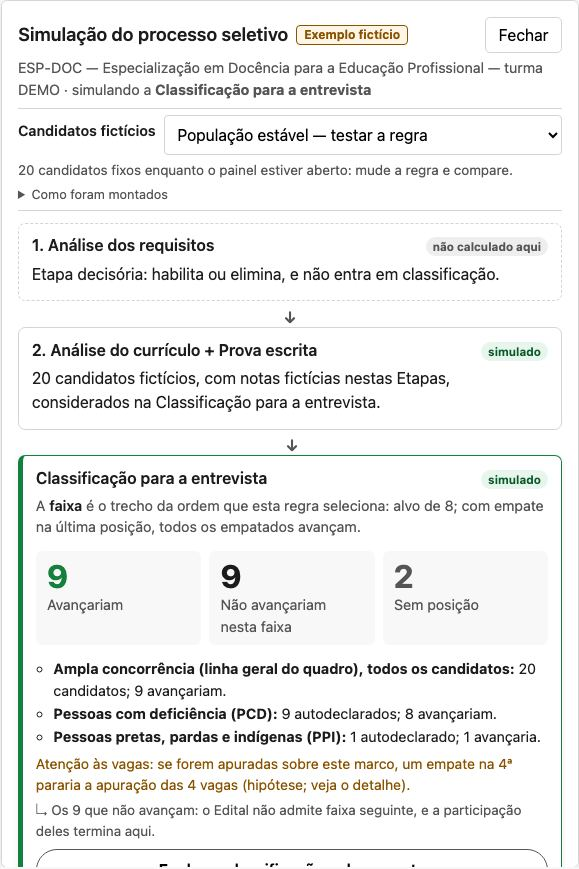
"Quem foi eliminado, onde e por quê, e a nota alta de alguém pode salvá-lo de uma nota baixa noutra Etapa?"
Dezoito pessoas se inscreveram, cada uma com Diploma, Currículo e data de nascimento. A comissão (presidente e dois avaliadores) foi alocada nas quatro Etapas, e cada Etapa seguiu o mesmo ciclo: distribuir, avaliar, consolidar. A presidência confirma um cálculo; não digita nota.
Requisitos. 17 Deferidos. C05 foi Indeferida ("certidão sem data de colação") e saiu de tudo, sem currículo nem prova.
Currículo. 17 notas, ninguém sai: a Etapa não é eliminatória. A melhor nota foi de C03, 95.
Prova. C04 faltou: a presidência registrou uma Ocorrência com o motivo, e o Resultado é "eliminado", sem nota. C03 tirou 55 e C14 52: abaixo de 60, eliminados. O 95 de C03 no Currículo não a salva, porque a regra da Prova age antes de qualquer soma.
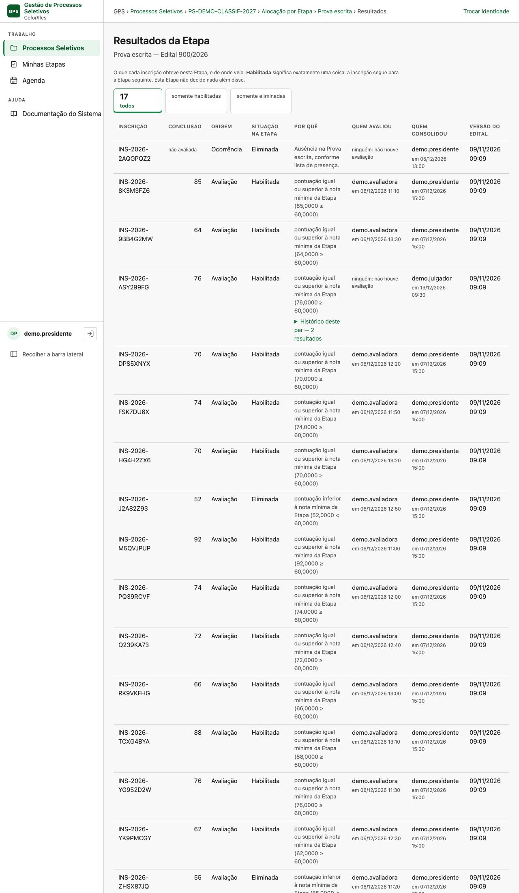
"Por que Sofia ficou à frente de Rafael, se os dois têm 76,50?"
A presidência abre a ordenação do marco 1 e vê uma proposta calculada agora; abrir a tela não grava nada. Ela confere ("O que será gravado": 14 com posição, 3 sem posição, com o motivo de cada um) e emite. O ato é imutável. A conta bateu, pessoa a pessoa, com a feita fora do sistema pelo mesmo motor.
Dois empates foram resolvidos pelos critérios publicados:
A tela da ordenação mostra só a pontuação combinada. Ela não mostra as notas por Etapa nem o critério que separou: Sofia aparece em 4º e Rafael em 5º, com a mesma nota e sem explicação. A explicação está no ato emitido ("Critério que separou"), abaixo de uma lista de 34 identificadores internos.
Logo depois de emitir, a tela sugere "Próximo nesta lista: Emitir o corte", antes da preliminar e da janela de recurso. Seguimos o Edital: o Publicador divulgou a preliminar das três listas.
C07 (66 + 3·80) / 4 = 306 / 4 = 76,50 C06 (78 + 3·76) / 4 = 306 / 4 = 76,50 1º critério, maior Prova: 80 > 76 → C07 4ª · C06 5º
C08 (72 + 3·74) / 4 = 294 / 4 = 73,50 C09 (72 + 3·74) / 4 = 294 / 4 = 73,50 1º critério, maior Prova: 74 = 74 2º, nascimento mais antigo: 1980 < 1992 → C08 6º · C09 7ª
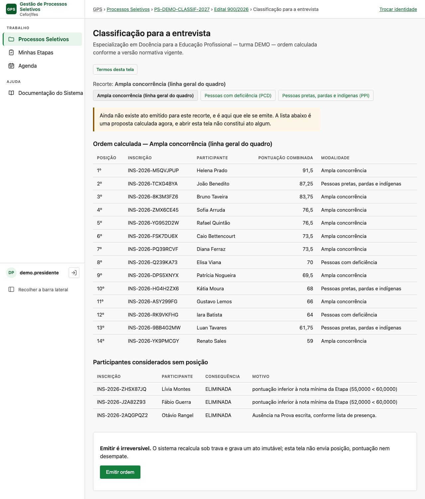
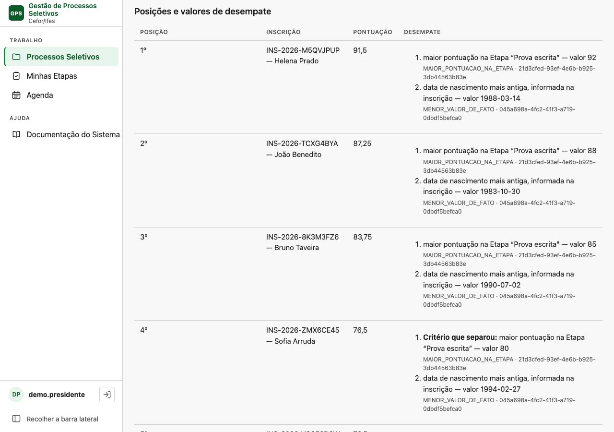
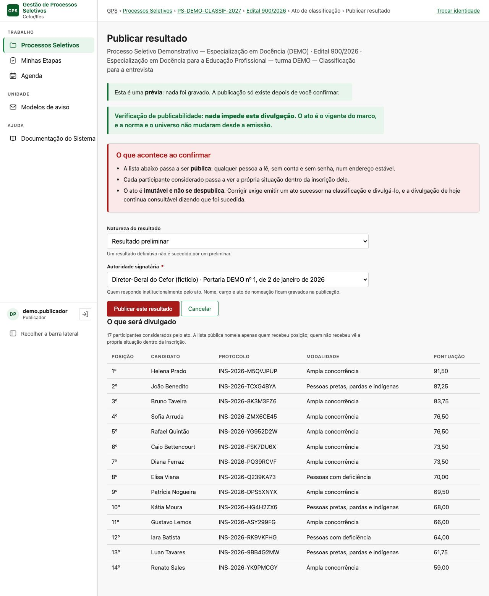
"A nota de uma pessoa foi corrigida. O que acontece com a classificação que já foi publicada?"
C10, 11º na preliminar, recorreu pelo portal: "as questões 3 e 4 somam 76 no espelho, e não 68". O Julgador admitiu e decidiu "Deferir fixando a correção". O formulário oferece as Etapas que o recurso alcança, com as notas vigentes (Currículo 60, Prova 68), e o campo da nota corrigida.
Antes de decidir, o Julgador não vê a prova nem o resultado atacado: isso depende de um ato de instrução da presidência ou do Gestor. Depois de decidir, a página diz só "Recurso deferido — o resultado foi corrigido".
A nota antiga não é apagada: nasce um Resultado sucessor. A ordem emitida fica obsoleta, e a tela da presidência diz isso, com as "Mudanças posição a posição":
As mudanças vêm por protocolo, sem nome, e sem dizer que a 8ª posição é a última do corte. A presidência emitiu a ordem sucessora, com motivo obrigatório. As listas PcD e PPI não ficaram obsoletas, porque C10 não está nelas.
A sucessora foi publicada direto como definitiva em 14/12. O público nunca viu uma "preliminar corrigida". decisão G2
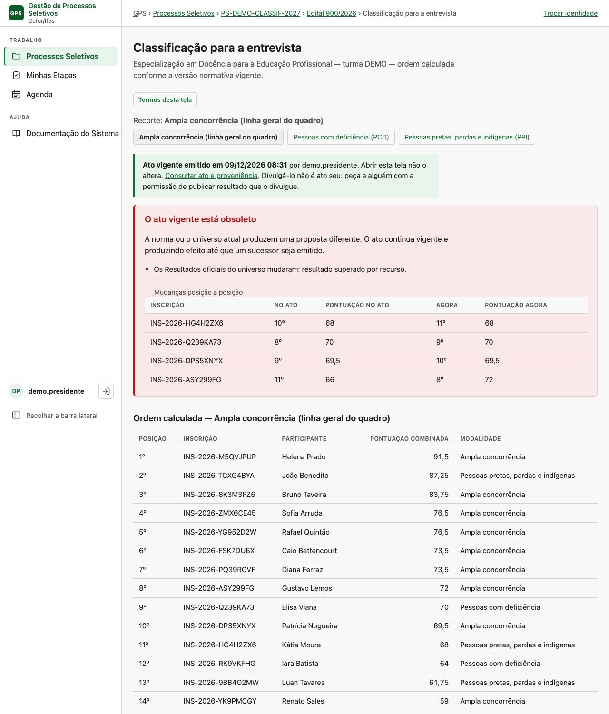
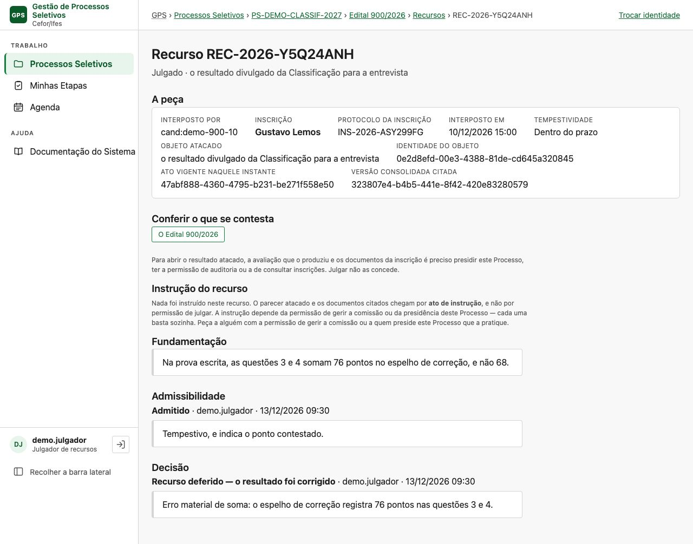
"Os 8 primeiros vão à entrevista. Por que foram 12?"
O corte é emitido por lista, com o alvo fixo de 8 em cada uma:
A Entrevista recebe a união: 8 + C13, C15, C17 e C18 = 12. C16 está em duas faixas e conta uma vez.
A tela do corte, aberta na ampla, mostra C13, C15, C17 e C18 como "Fora da faixa", e eles vão à Entrevista por outra lista. Nenhuma tela mostra a lista de quem chega à Entrevista nem por onde cada um chegou. Para saber, abre-se o corte nas três abas e se junta à mão.
Ficaram sem Entrevista C11 (10º) e C12 (14º): passaram na Prova e pararam no marco 1. É o caso de quem "progride numa Etapa e não na outra".
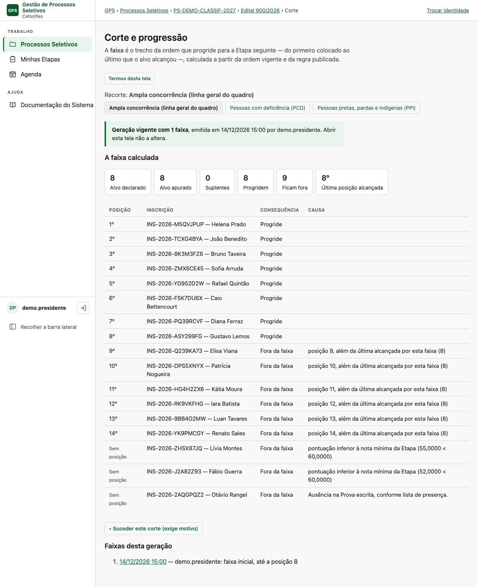
"Caio e Sofia empataram em 75,67. Quem fica com a última posição da faixa?"
Das 12 pessoas chamadas, C18 faltou (Ocorrência) e C15 tirou 55 (abaixo de 60). As duas ficam sem posição no marco final.
O marco 2 soma as três Etapas com pesos 1, 3 e 2 e divide por 6. Na ampla, a faixa é 4 vagas + 2 suplentes = 6 posições. C08 e C07 empatam em 75,67, exatamente na 6ª posição. O 1º critério (maior nota na Entrevista, 80 > 74) põe Caio dentro e Sofia fora.
C07 recorreu da Entrevista; o recurso foi indeferido ("o desempate seguiu o critério publicado"). Saíram as definitivas em 28/12, e os cortes: ampla 6, PcD 1 (C13), PPI 2 (C16, C17).
No portal, Sofia vê "Aguardando chamada" e "7º lugar · pontuação 75,67", com o resultado de cada Etapa. Não vê que empatou com o 6º nem o que decidiu o empate.
(90 + 3·92 + 2·95) / 6 = 556 / 6 = 92,666… → 92,67 (meio para cima, 2 casas)
C08 (72 + 222 + 160) / 6 = 454 / 6 = 75,67 C07 (66 + 240 + 148) / 6 = 454 / 6 = 75,67 1º critério, maior Entrevista: 80 > 74 → C08 6º, dentro da faixa · C07 7ª, fora
Currículo 95 → habilita (não elimina) Prova 55 < 60 → ELIMINADA Nenhuma soma acontece: sem posição nos dois marcos
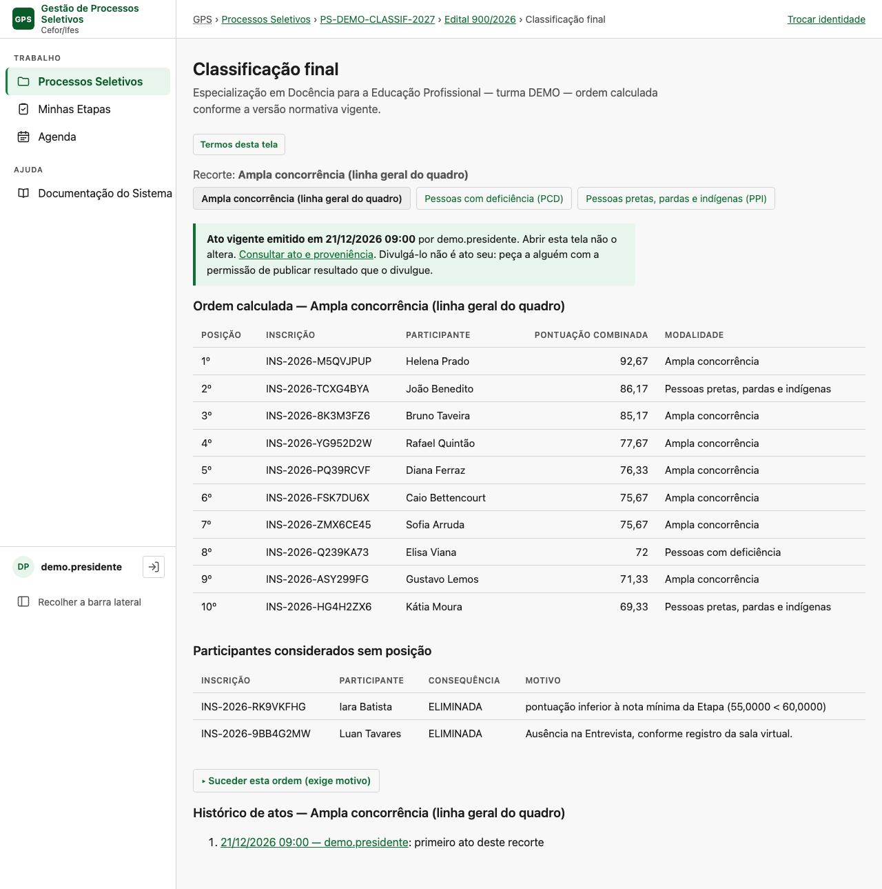
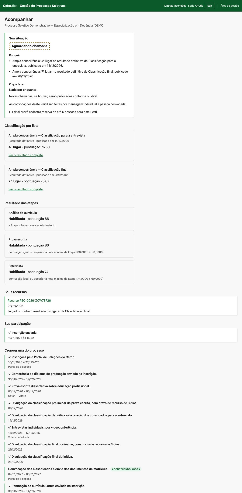
"João é 2º na ampla e 1º na PPI. Ele ocupa qual vaga?"
Cada lista apura as próprias vagas. A ampla é apurada primeiro: Helena, João, Bruno e Rafael, os 4 primeiros. João (C16) se declarou PPI, mas está dentro das vagas da ampla e ocupa pela ampla. A apuração da PPI o exclui, e a vaga PPI vai para Kátia (C17), que é 10ª na ampla. A PcD tem uma pessoa, Elisa (C13).
Na classificação, o cotista disputa a ampla com a mesma nota e o mesmo desempate. A reserva só entra em conta na hora de ocupar vaga. A concorrência simultânea age na apuração, e não no corte: o corte da PPI marcou João como "progride".
A tela da Ocupação mostra números (publicadas, efetivas, ocupadas, a ocupar) e não diz quem ocupa. "Ocupadas: 4" aparece antes de qualquer convocação: conta os titulares desde a apuração, e não matrículas.
"Chamo os seis, peço a identidade e confiro. E se o documento vier ilegível?"
"Convocar os titulares num ato só" é a tela mais clara do processo. Ela:
Resultado: "4 convocações praticadas… 4 comunicações enviadas… 4 aguardam documentos". O mesmo para PcD e PPI.
Cada convocado apresenta a identidade pelo portal. Para dizer "Conforme", quem confere precisa ter aberto a versão; o sistema recusa o contrário. O documento de Rafael (C06) veio ilegível: "Pendente", com motivo que ele lê. Ele reapresentou (versão 2), e a página mostra as duas versões e as duas conferências.
O aceite é recusado enquanto faltar conferir documento obrigatório.
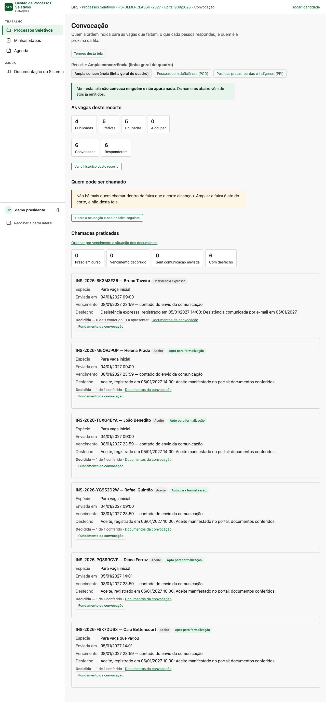
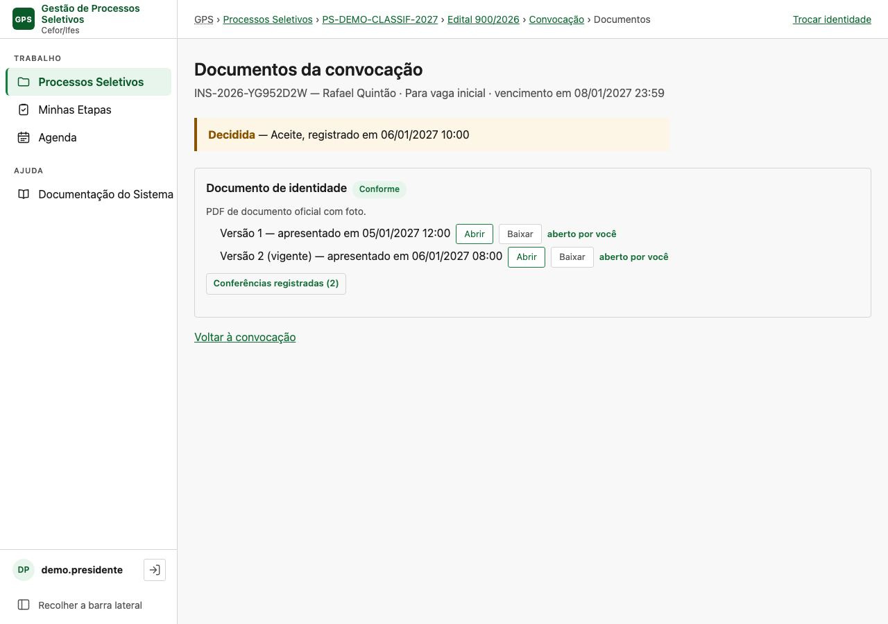
"Bruno e Elisa desistiram. Quem entra no lugar, e a vaga PcD se perde?"
Helena e João aceitaram. Bruno (ampla) desistiu: o desfecho emitiu a apuração seguinte no mesmo ato ("1 a ocupar"). A linha "Próximo nesta lista" continuou apontando a resposta pendente, e não a chamada do suplente.
Elisa, a única da lista PcD, desistiu. Desta vez a apuração não saiu sozinha: "moveria vaga deste recorte para a ampla concorrência, pela reversão que o Edital declarou: emita-a na ocupação". A sequência foi:
Com 5 vagas efetivas, Diana (C09) virou titular ("para vaga inicial") e Caio (C08) entrou "para vaga que vagou", a de Bruno. Os dois foram convocados, apresentaram, foram conferidos e aceitaram, junto com Rafael e Kátia.
Final: 6 vagas ocupadas por aceite, 5 na ampla e 1 na PPI. Sofia (C07) é a próxima da fila, fora da faixa.
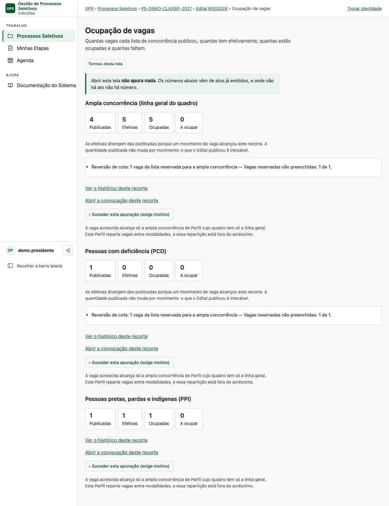
"Se a Prova fosse o 1º critério de desempate, o que mudaria?"
O botão "Simular classificação" funciona também no Edital publicado: a etapa Classificação abre com os controles habilitados e sem "Salvar". Ele calcula com o motor oficial, sobre 20 candidatos fictícios, e explica cada empate critério a critério, com os valores. É a melhor explicação de desempate do sistema.
Experimento 1. Invertemos os critérios 1 e 2 do marco final.
Experimento 2. Alvo do marco 1 de 8 para 6. O simulador: "Avançam: 9 → 6. PCD: avançam 8 → 6. Poderiam participar da Etapa seguinte: 14 → 10".
O simulador ensina a regra, não o caso:
Os fictícios se chamam Bruno, Elisa, Fábio, Sofia…, os mesmos nomes de candidatos reais deste caso. decisão G3
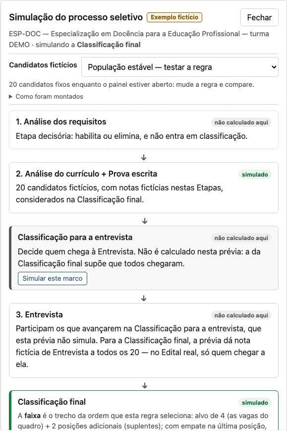
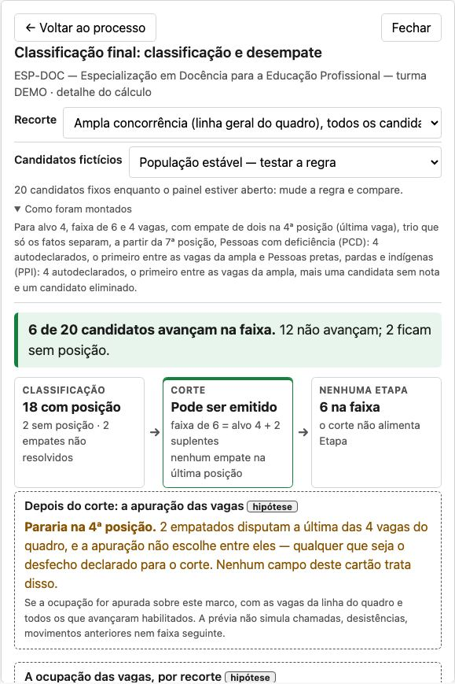
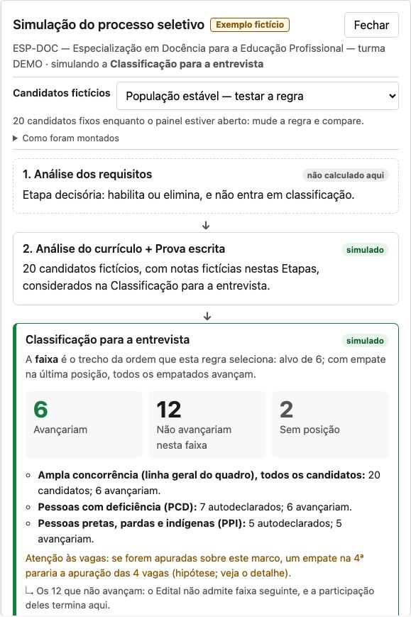
Escolha uma pessoa e veja o caminho dela: cada Etapa, cada conta, cada lista, e onde o percurso parou. É a explicação que as telas do GPS não dão de uma vez só.
Notas de 0 a 100. M1 = (CUR + 3·PRO) / 4; M2 = (CUR + 3·PRO + 2·ENT) / 6, arredondados a 2 casas, meio para cima. Posições na ampla, que inclui os cotistas; entre parênteses, na lista reservada. Lido do banco depois da execução. GPS
| Cód. | Nome | Lista | Req. | Cur. | Prova | M1 | Pos. M1 | Entrev. | M2 | Pos. M2 | Desfecho |
|---|
O que obrigou a recorrer ao código ou à conta à parte para explicar uma posição. São sugestões, não decisões; as perguntas de governança estão no estudo, seção 14.